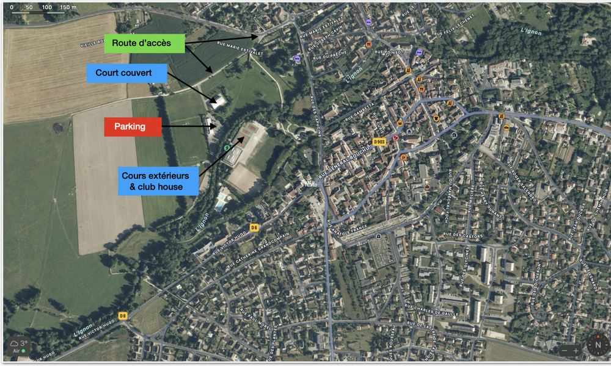

Accueil · Le club
Un club rural qui joue dans la cour des grands
Dixième club de Côte-d'Or par le nombre de licenciés et premier club rural du département. Cinq courts, une école de tennis, et un bureau entièrement composé de bénévoles.
Allée des Soupirs
Les installations
Cinq courts au total, utilisés par l'école de tennis, les équipes en championnat, les tournois et le jeu libre des adhérents.
4
Courts extérieurs
Situés au centre des installations. Ils accueillent les cours de l'école de tennis, les rencontres de championnat, les tournois, et le jeu libre des adhérents.
- Accessibles aux non-adhérents avec un ticket horaire ou une carte vacances
- Clé d'accès remise contre une caution de 10 €
- Éclairage disponible, par jetons de 2 € l'heure
- Surface en béton poreux
1
Court couvert
Situé en face du parking, il permet de maintenir les cours et de jouer les rencontres de championnat quand la météo ne permet pas de jouer dehors.
- Réservation via Ten'Up, en ligne uniquement
- Badge d'accès remis contre une caution de 20 €
- Priorité aux cours de l'école de tennis
S'y rendre
Venir au club
L'adresse
Tennis Club IssoisAllée des Soupirs
21120 Is-sur-Tille
Le lien ouvre un service de cartographie extérieur au site.
En venant d'Is-sur-Tille
- Prendre la route qui relie Is-sur-Tille à Dienay.
- Laisser le parc des Capucins sur votre gauche.
- Continuer jusqu'au rond-point du collège.
- Les courts se trouvent allée des Soupirs.
Un parking se trouve entre le court couvert et les courts extérieurs, à l'entrée des installations.

Des bénévoles
Qui fait tourner le club
Le club est administré par un conseil d'administration, dont émane le bureau. Des commissions thématiques portent chacune un domaine.
Le bureau
Président
Jean-Michel Vauthrin
Vice-président
Thierry Hunot
Vice-président
Xavier Rabago
Secrétaire
Jeanne Hunot
Secrétaire adjointe
Céline Rouot
Trésorier
Philippe Steib
Trésorier adjoint
Benoit Reneaume
Le conseil d'administration
Outre les membres du bureau, siègent au conseil :
- Agnès Vauthrin
- Justine Ligney
- Solène Bizot
- Stéphanie Faivre
- Sébastien Demonet
- Maia Demonet
Les commissions
Bien vivre ensemble
Règlements et usages
Sur les courts
- Chaussures de tennis obligatoires, adaptées à la surface.
- Interdiction de fumer sur l'ensemble des installations.
- L'accès n'est autorisé qu'une fois la licence réglée, pour des raisons d'assurance.
- Le court couvert se réserve uniquement via Ten'Up.
Règlement intérieur du court couvert
Conditions d'accès, réservation, respect des créneaux de l'école de tennis.
Texte à intégrer
Charte des championnats
Les engagements de bonne conduite attendus des joueurs qui représentent le club en compétition.
Texte à intégrer
Saison 2025-2026
Le mot du président
Bonjour à toutes et à tous,
L'année tennistique 2025-2026 s'achève. Elle a été à nouveau très riche en évènements sportifs et animations diverses à destination des licenciés, en particulier des plus jeunes.
À noter les fortes participations aux championnats par équipe — coupe d'automne, championnat des plus de 35 ans, championnat adultes de printemps, championnat jeunes — qui ont représenté au total 162 participants et d'excellents résultats. En particulier :
- Coupe d'automne : équipe 3 mixte en division 2, finaliste en phase finale départementale.
- Championnat jeunes : équipe 1 filles 15-18 ans en division 2, finaliste en phase finale départementale.
- Championnat de printemps adultes : équipe 3 hommes en division 4, première de sa poule en phase préliminaire.
Au niveau sportif toujours, le TMC et l'Open d'été viennent de se terminer, avec notamment chez les dames la victoire de Justine Ligney au TMC dames, et les excellents résultats de Léo Bonin au TMC hommes et d'Alexis Sauvageot à l'Open d'été.
De nombreux jeunes et adultes du TCI ont vu leur classement nettement amélioré au cours de cette année. Une de nos joueuses a même participé au championnat de France seniors plus de 50 ans, qui s'est déroulé à Roland-Garros.
Côté animations, toutes les occasions sont bonnes pour lier sport et convivialité : Halloween, Noël, Pâques… sans oublier la journée Tennis en fête, qui a remporté un franc succès.
Je remercie vivement pour leur implication les moniteurs, qui sont pour beaucoup dans les réussites sportives, ainsi que les membres du conseil d'administration et du bureau, qui ne comptent pas leurs heures. Chacune et chacun contribuent à la notoriété du club, qui souhaite rester un club à l'esprit convivial tout en permettant à celles et ceux qui le souhaitent de progresser tennistiquement.
J'aurai le plaisir de vous retrouver dès début septembre pour une nouvelle année tennistique. Les inscriptions sont d'ores et déjà ouvertes, et nous serons présents au forum des associations.
En attendant, je vous souhaite un très bel été. Sportivement,
Venez voir par vous-même
Le club-house est ouvert tous les samedis de 10 h à 12 h. Passez, on vous fera visiter et on répondra à vos questions.